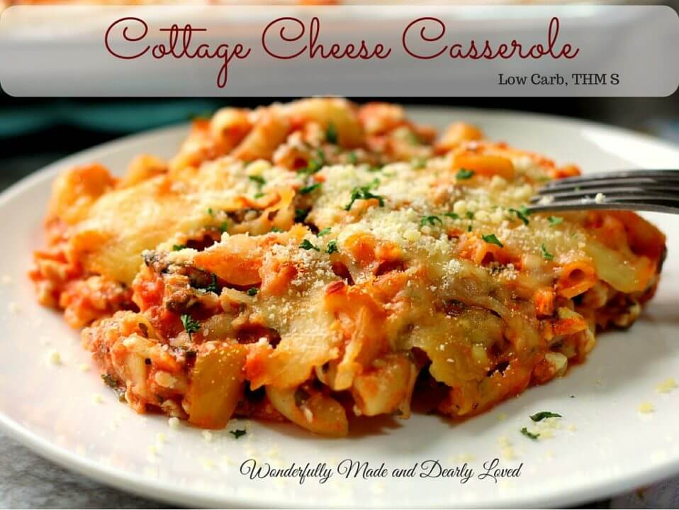

Cottage Pie

Description
A budget friendly meal that looks, but also tastes good.
Ingredients
- butter
- mushroom
- onions
- celery
- garlic
- tomato paste
- pasta
- water
- ground beef
- salt
- parsley
- spices
- cottage cheese
- parmesan cheese
- mozzarella
Steps
- Saute mushrooms, onions, parsley, celery and garlic in a large skillet with the butter
- Combine tomato paste, water, macaroni, salt sweetener and vegetables
- Add the ground beef and spices of your liking.
- Put ½ of this mixture in the bottom of crockpot.
- Top with 1 cup cottage cheese, 1 cup mozzarella and ½ of the Parmesan cheese. Repeat Layers.
- Cover and cook on low for 3-4 hours or high for 1 hour